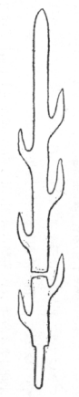

昨秋〔（大正七年）〕十月大和に遊び、石上神宮に参拝して、有名なる神宝六叉鉾と称する異形の古武器を拝観することを得た。茎一にして、左右に各三枝、都合六個の枝を生じて、切尖とともに七鋒をなしている。その切尖以外、六叉あるので、これを鉾と見立てて、六叉鉾の称を得たと察せられる。しかしこれが六叉鉾ではなく、
この七枝刀のことについては、すでに明治二十五年十二月の『史学雑誌』に、故星野〔（恒）〕先生が、図を掲げて考証を発表せられた〔３９〕。それには、神功皇后五十二年に、わが千熊長彦に従って来た百済使者久
 献上の、七枝刀なるものであろうと論ぜられている。まことに卓見で、爾後多くこれを疑ったものを聞かない。しかしながら先生は、いかなるゆえにや年表を見誤られて、魏の「太和」の年号を「泰初」となし、魏の文帝泰初四年のものだと考定せられた。この点はまことに惜しむべき過誤ではあるが、言わば白璧の微瑕で、大体において今なお立派な御研究と拝見する。
献上の、七枝刀なるものであろうと論ぜられている。まことに卓見で、爾後多くこれを疑ったものを聞かない。しかしながら先生は、いかなるゆえにや年表を見誤られて、魏の「太和」の年号を「泰初」となし、魏の文帝泰初四年のものだと考定せられた。この点はまことに惜しむべき過誤ではあるが、言わば白璧の微瑕で、大体において今なお立派な御研究と拝見する。
第一図 七枝刀
その後、大正三年八月、高橋健自君が関〔（保之助）〕・新納〔（忠之介）〕・佐藤〔（小吉）〕・梅原〔（末治）〕諸氏とともに、さらにその銘文を精査せられ、前に不明であったところも、やや明かになって来た。銘文は両面に各一直線に金象眼になっている。その文字を梅原君の手記によって示せば第二図の通り。

第二図 七枝刀銘文
かくて高橋君は、十月の考古学会の例会において、「京畿旅行談」の一部として、この神宝のことを述べられた。記事は『考古学雑誌』第五巻第三号にある。曰く、
其象嵌銘文は、泰始四年六月十一日丙午正陽造百錬□七支刀云々と読み得らる、三正綜覧によりて其干支を按ずるに、西晋武帝泰始四年六月十一日は丙午なれば、此鉾銘文は正しく晋の泰始に相違なく、星野博士は、此鉾を以て日本紀神功紀五十二年秋九月の条に見えたる、百済使者の献じたる七枝刀なるべしと論ぜられたるが、今其銘文中に七支刀とあれば、之れ七枝刀に相違なかるべく（云々）。
これを晋の泰始とすることは、故那珂〔（通世）〕博士もかつて余に語られたことがあるが、高橋君のはさらに干支に引き当て、百尺竿頭一歩を進められた研究として、世に推奨するに躊躇せぬ。しかしながら、その銘文なる年号を「泰始」と読まれたについては、なお研究を要するものがあろうと思う。星野先生も泰始と泰初と両号を抽出せられ、
三国魏文帝の世に泰初あり、晋武帝の代に泰始あり。然れども「イ」（星野先生の見られたる銘文第二字目は、写し不完全にして、左旁の「イ」のみ見るを得たるなり）は「初」に近くして、「始」に遠し。疑らくは是「初」の字の残画ならん。
と、言われたが、高橋君らの丹誠によって、さらに精しくこれを写し取られたものを見るに、いっそうこの感を深くして、とうてい「始」の字とは見ることは出来ない。そこで年表によって「泰初」の年号を調査するに、前漢・前秦・南凉・西秦に各「太初」がある。「太」は「泰」に通ずるので、『晋書』には武帝泰始元年条に改元のことを記して、「改二景初暦一為二太始暦」ともある。よってこれらの太初を『三正綜覧』に当ってみたところが、左の結果を得た。
前漢太初四年六月十一日癸丑 前秦太初四年六月十一日甲午
南凉同 庚寅 西秦同 壬子
いずれも銘文の干支に合わぬ。さらにこれを「泰初」以外に求めると、「泰和」の文字がやや似ている。しかし魏・後趙・成漢・東晋・北魏等にある太和、これまた一も干支の符合するのがない。『三正綜覧』にも、一日や二日の間違いがないとも言われぬが、これらの齟齬はいずれもそんな僅少のことではないから、どうしても高橋君推定の泰始四年以外に、この干支に当て嵌めてみるべきものがないと極った。南凉同 庚寅 西秦同 壬子
しからばこれを無理にも「泰始」と読むべきか。これについてはわが輩に説がある。『日本紀』神功皇后六十六年の条に、
（六十六年。是年晋武帝泰初二年。晋起居注云。［＃改行］武帝泰初二年十月、倭女王遣二重訳一貢献。）
とある。この三十四字は後人の加筆として、『集解』『標注』『通釈』等には、いずれも削除してあるが、よしや加筆であるとしても、古く『晋起居注』がわが邦に伝わって、それに泰初の年号があったことは、一とまずこれを認めねばならぬ。しかしてその年は、年表を按ずるに、まさに『晋書』の泰始二年に相当する。しからば泰始はもと泰初とあったので、その四年六月十一日丙午に作った七枝刀には、まさに当時の文字通り、「泰初」と書いたものだと解せねばならぬ。果してしからば何故に泰初を、泰始に改めたか。あるいは同義の理由から、避諱によってこうなったのかとも思われるが、普通の避諱の例にはいっこうそれが見えぬのみか、『晋書』に「初」の字を忌んでおらぬ。ところが、理学博士小川琢治君が［＃「小川琢治君が」は底本では「小川琢次君が」］、宋版『証類本草』の序例（梁陶弘景著『本草集註』の首巻序録に加筆したもの）を、橘瑞超師の燉煌石室発見に係る隋以前の古写『本草序録』と対照校合せられた時に、宋版の方は、唐の高宗の諱の「治」の字を避けて、ただに同じ文字のみならず、いやしくも右旁に「台」のある字は、ことごとく他の字に改めてあることを発見されたそうである。これは普通の避諱の例とは違って、珍らしいことであるが、もしその例によったとしたならば、もと「泰始」とあったのを唐代に「泰初」と改めたことなのであって、始めて意義が通ずるはずである。しかもこの場合はその反対であるが、思うに唐代において古書を写すに当り、「始」の字を「初」と改めるのが例であったによって、後にその「初」を「始」と戻すついでに、初めから「泰初」であった年号をも、これも「始」を改めたものだと誤解して、お相伴に「泰始」に戻したのではあるまいか。シナの当時の金石文に「泰始」の号が発見されない限り、しばらくかく定めておきたい。果してしからば、『日本紀』所引の『晋起居注』なり、この七枝刀の銘文なりは、当初の年号をそのままに伝えたものとして、この意味からも有益なる史料と言わねばならぬ。
なお『日本紀』に、百済の使者久
がこれを献じたのは、神功皇后の五十二年とあって、該書の年立によると、泰初四年とは十六年の前となる。しかしこの『日本紀』の年立は、著者がわが神功皇后をもって、『魏志』等に見えた倭女王卑弥呼だと誤解して、その年代に当てはめたものであって、実際には皇后の御年代は、これよりも数十年間後れている。『古事記』によるに、仲哀天皇の崩年は壬戌の年で、多分晋の恵帝泰安元年の壬戌のことと察せられる。果してしからば、泰初四年よりは三十四年の後となる。この泰初と仲哀天皇崩年との間において、馬韓がしきりに晋と交通した記事が『晋書』〔（四夷伝）〕に見える。すなわち「武帝太康元年・二年、其主頻りに使を遣して、入りて方物を貢す」とか、「七年・八年・十年、又頻りに至る」とか、「太熙元年東夷校尉何龕に詣りて上献す」とか、「咸寧三年復来り、明年又内附を請ふ」など見えている。方物を貢すとか、上献すとかいうことは、つまりは物品の交易で、それ相当の品を、晋から得て帰ったに相違ない。七枝刀もあるいはこれらのさいに得た物であろうか。馬韓は今の全羅・忠清地方で、魏のころには五十四国に分れ、百済すなわち伯済は、そのうちの一国に過ぎなかった。その後、百済次第に勢力を得て、ついに馬韓地方を一統するに至ったので、晋のころには、馬韓諸国の中でも、最も有力なものであったに相違ない。しかしてその百済国が、晋から得た七枝刀をわが国に奉ったとして、条理きわめてよく通ずる。この特別の由来を有し、特に史上に著名の宝刀が、よしや多少の損傷を受けたとはいえ、千数百年後の今日に伝わり、われらまでもこれを拝観するを得るとは、まことに奇蹟と申さねばならぬ。以上述べたところを約言すれば左の通り。
一、石上神宮安置の六叉鉾と称するものは、銘文の明示するごとく、七枝刀なり。
二、この七枝刀は、『日本紀』に神功皇后五十二年百済貢献とあるものなるべし。
三、この七枝刀は、晋の武帝泰初四年六月十一日の製作にかかる。大正八年を距るまさに千六百五十一年の前なり。
四、『晋書』に泰始とある年号は、おそらくはこの泰初を後に誤りたるものなるべし。
二、この七枝刀は、『日本紀』に神功皇后五十二年百済貢献とあるものなるべし。
三、この七枝刀は、晋の武帝泰初四年六月十一日の製作にかかる。大正八年を距るまさに千六百五十一年の前なり。
四、『晋書』に泰始とある年号は、おそらくはこの泰初を後に誤りたるものなるべし。
編注
〔３９〕 星野 恒「七枝刀考」（『史学雑誌』第三編第三七号、明治二五年一二月）。